Queries and show rules
Use queries to inspect document elements, and show rules to customize how they render. This guide assumes you are comfortable with the component fields.
Choose the right tool
Codly’s components are Elembic custom elements. Use the exported codly.e namespace to inspect fields, filter elements, or read scoped defaults. It provides the same Elembic version Codly uses, without a separate package import.
| Task | Tool |
|---|---|
| Set component defaults | #show: codly.number-set_(...) and other *-set_ helpers |
| Wrap or replace a component | #show: codly.number-show_(it => ...) and other *-show_ helpers |
| Read an element’s resolved fields | codly.e.fields(it) |
| Find custom elements in the document | codly.e.query(codly.new) inside context |
| Read defaults in the current scope | codly.e.get(get => ...) |
The Codly helpers delegate to codly.e.set_ and codly.e.show_. For example, codly.number-show_(callback) is shorthand for codly.e.show_(codly.number, callback). Native #set codly.number(...) does not configure an Elembic element.
Query elements and inspect their fields
codly.e.query returns matching custom elements; codly.e.fields returns their field dictionaries. A .with(...) filter compares resolved field values. Use before: here() or after: here() to restrict the query by document location. Elembic’s query guide documents these filters and location bounds.
#import "@preview/codly:2.0.0" as codly
#codly.new(
```py
print("hello")
```,
radius: 8pt,
)
#context {
let blocks = codly.e.query(codly.new.with(radius: 8pt), before: here())
[Matching blocks: #blocks.len().
Language: #codly.e.fields(blocks.first()).body.lang.]
}Edit & run on your device
The highlighted source and output update after you stop typing. Copy code includes your edits.

Use native query(<label>) for labeled content and query(figure) for Typst figures. For custom elements, prefer codly.e.query: codly.selector() and codly.e.selector(codly.number) are native selectors intended for show rules. Their default selectors can match intermediate renderings; they are not reliable instance counters. Elembic’s meta: true selector exists for lower-level metadata queries.
Set defaults, then customize rendering
Use *-set_ for fields such as fill, inset, or numbering. A *-show_ callback receives the element, with scoped defaults resolved, and must return content. Use codly.e.fields(it) to read its custom fields; native it.fields() describes Elembic’s underlying Typst representation.
#import "@preview/codly:2.0.0" as codly
#{
show: codly.number-set_(numbering: "1.")
show: codly.e.show_(codly.number.with(number: 2), it => {
text(red, weight: "bold", it)
})
codly.new(
```py
first = 1
second = 2
```,
)
}
// The rules above end with their enclosing scope.
#codly.new(
```py
ordinary = 3
```,
)Edit & run on your device
The highlighted source and output update after you stop typing. Copy code includes your edits.

Returning it, or wrapping it as above, preserves the component’s existing renderer. Returning fresh content replaces that renderer. For example, codly.lang-show_(it => strong(codly.e.fields(it).body)) displays only the language name and bypasses its usual badge rendering. Constructing a new matching component inside its own show rule can trigger the rule again.
When you need a native show-set rule, use an Elembic selector:
#import "@preview/codly:2.0.0" as codly
#show codly.e.selector(codly.header): set text(style: "italic")Read scoped defaults
codly.e.get reads settings at its position, even without a component instance. codly.e.fields(it) reads the fields of a particular instance, including explicit constructor arguments.
Read resolved fields in show callbacks or query results. A newly constructed instance can still have incomplete fields until Elembic displays it; codly.e.fields(codly.new(...)) is not a way to read all current defaults.
#import "@preview/codly:2.0.0" as codly
#show: codly.set_(radius: 8pt)
#codly.e.get(get => [Current default radius: #get(codly.new).radius.])Edit & run on your device
The highlighted source and output update after you stop typing. Copy code includes your edits.
Keep custom rules predictable
- Put rules before the content they style, and group related rules in a local
{ ... }scope or template. - Target the smallest useful component: a number rule for number formatting, a line rule for rows, a block rule for the whole listing. Prefer existing fields before replacing rendering.
- Keep callbacks free of document-wide queries when fields already contain the needed information. Codly can create many row and number elements.
- Preserve
itwhen adding decoration. Replacing rows or whole blocks can remove the syntax, layout, anchors, and metadata produced by their default renderers. - Test wrapping, page breaks, and references when a rule changes geometry. Optional diff and syntax features also create internal passes, so an unrestricted query may include supporting elements.
For more detail, see Elembic show rules, Typst queries, and Codly internals.